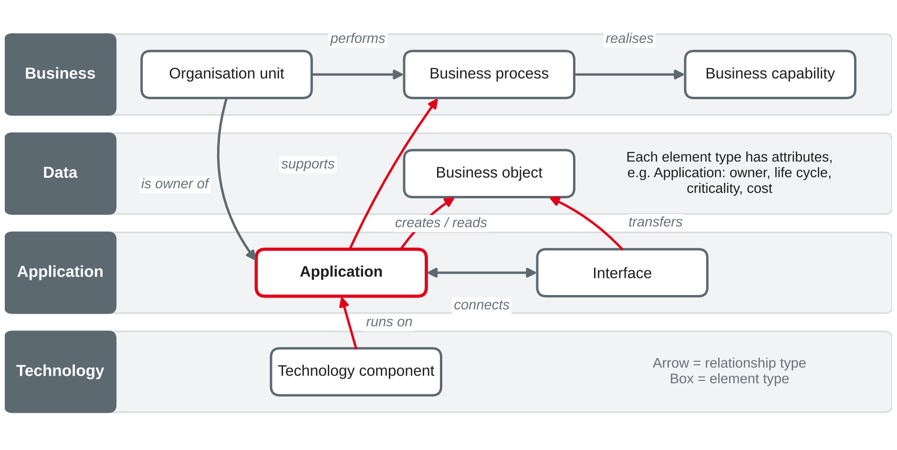
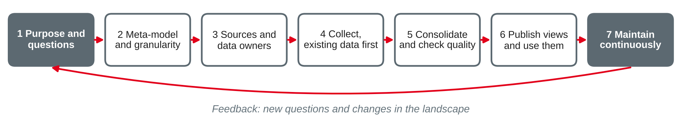

IT Management and EAM
Why and what to collect · meta-models · document analysis, interviews, workshops and tool imports · data quality and maintenance of EA repositories
DHBW · Digital Business Management (Business IT) · Semester 4
You were asked to find out where your training company documents its applications.
Purpose before data
Start from questions
Typical anti-patterns
Collect as little as possible and as much as needed to answer the questions of the stakeholders.
Own wording based on Hanschke (2023) and Keller (2017).
A survey of 140 EA practitioners on how they document their architecture:
| Finding | Share of respondents |
|---|---|
| Collect data by manual inspection of applications and databases | 76 % |
| Collect data in interviews with stakeholders | 68 % |
| Collect data in modelling workshops | 53 % |
| Name the huge effort of data collection as a challenge | 55 % |
| Name bad data quality as a challenge | 55 % |
| Have some form of automated update of their EA tool | 19 % |
Roth et al. (2013); rounded.
Element types, relationships and attributes
A meta-model is the "model of the model": it defines which element types, relationship types and attributes may be used to describe the architecture — and which rules apply to them.
| Level | Example |
|---|---|
| Meta-model | Element types Application and Technology component; relationship type runs on; attribute life cycle status |
| Model (the repository content) | "Car-sharing app runs on the container platform of the cloud provider; status: active" |
| Reality | The software and the cloud platform as they actually exist |
Own wording based on Lankhorst (2017) and The Open Group (2022).

Own illustration based on Hanschke (2023) and The Open Group (2022).
| Attribute group | Examples for the element type Application |
|---|---|
| Identification | Unique ID, name, short description, aliases |
| Responsibility | Business owner, IT owner (technical responsibility) |
| Life cycle | Planned · in development · active · phase-out · retired, with dates |
| Business value | Supported processes and capabilities, number of users, criticality |
| Technical state | Technology stack, hosting, standard software or own development, vendor |
| Cost and contracts | Running cost per year, licence and support contracts |
| Risk and compliance | Protection requirements (session 8), personal data yes/no |
Own compilation based on Hanschke (2023) and Keller (2017).
The problem
Modelling guidelines decide
Own wording based on Hanschke (2023).
Classify each item from the EA repository of Rhein-Neckar Mobil Group as element type, element, attribute (value) or relationship.
| Where | What it offers |
|---|---|
| TOGAF Standard | An enterprise metamodel as part of its content framework, with core entities across business, data, application and technology, to be tailored to the enterprise |
| ArchiMate (session 17) | A modelling language with a fixed meta-model and a standard notation for elements and relationships |
| EAM tools (session 18) | A predefined, configurable meta-model with fact sheet types, attributes and reports |
| Own meta-model | Often derived from one of the above and tailored to the questions of the stakeholders |
Own summary based on The Open Group (2022) and Lankhorst (2017).
Documents, people and systems
Documents
Application lists, contracts and licence lists, operating handbooks, project documents, records of processing (GDPR), BIA results, network diagrams, organisation charts.
People
Business and IT owners, process owners, developers and operators, purchasing and controlling — reached through interviews, questionnaires and workshops.
Systems
CMDB and ITSM tool, software asset and licence management, cloud provider inventories, project portfolio tool, integration platform and API gateway, network monitoring.
Start with what already exists — then ask people to confirm and complete, instead of asking them to start from a blank page.
Own compilation based on Hanschke (2023) and Roth et al. (2013).
Strengths
Weaknesses
Treat results from documents as hypotheses to be confirmed by the owners.
Own wording based on Hanschke (2023) and Keller (2017).
Interviews
Questionnaires
Own wording based on Hanschke (2023) and Roth et al. (2013).
A workshop works best when the participants correct a prepared draft instead of drawing from scratch.
Own wording based on Hanschke (2023) and Roth et al. (2013).
| System | What it can deliver | Limits |
|---|---|---|
| CMDB / ITSM tool | Servers, installed software, services, incidents | Technical view; names differ from business names |
| Software asset and licence management | Installed and licensed products, versions | Says nothing about business use |
| Cloud provider inventories | Cloud resources, regions, cost | Resources must be mapped to applications |
| Project portfolio tool | Planned changes to applications | Often only project names, not affected elements |
| Integration platform, API gateway | Real interfaces and data flows | Covers only interfaces that run through it |
Imports are up to date and cheap to repeat, but deliver a technical view: someone must map IDs and names to the meta-model.
Own compilation based on Farwick et al. (2011) and Roth et al. (2013).
| Method | Best for | Effort | Main risk |
|---|---|---|---|
| Document analysis | First draft, formal facts | Low | Outdated, inconsistent |
| Interviews | Relationships, context, problems | High per element | Subjective, depends on memory |
| Questionnaires | Attributes of many known elements | Low per element | Low response, misunderstood fields |
| Workshops | Cross-unit maps, conflicts | High, many people | Dominant voices, poor preparation |
| Tool imports | Technical facts, frequent updates | High once, low later | Technical view, mapping needed |
No method is enough on its own: combine them and cross-check the results.
Own comparison based on Hanschke (2023), Roth et al. (2013) and Farwick et al. (2011).
Win the owners
Respect rules and people
Own wording based on Hanschke (2023) and Ahlemann et al. (2012).
The architecture team of Rhein-Neckar Mobil Group needs the following information. Which source and method would you use first — and how would you check the result?
Keeping the EA repository trustworthy
| Category | Dimensions | EA example |
|---|---|---|
| Intrinsic | Accuracy, believability, objectivity, reputation | The recorded owner is really responsible; the hosting location is correct |
| Contextual | Value-added, relevancy, timeliness, completeness, appropriate amount | All applications of all units are recorded; status updated after go-live |
| Representational | Interpretability, ease of understanding, consistency, conciseness | Same granularity and naming rules in all units |
| Accessibility | Accessibility, access security | Owners can find and update their data; vulnerabilities only visible to security |
Data quality is fitness for use: data are good if they are good enough for the decisions they support.
Own examples; categories and dimensions based on Wang and Strong (1996).
Who and when
How and how well
Own wording based on Hanschke (2023) and Ahlemann et al. (2012).

Own illustration based on Hanschke (2023) and Roth et al. (2013).
Case: Rhein-Neckar Mobil Group (sessions 3–10): 3,200 employees, €410 million turnover, three units. The new two-person architecture team must deliver, within six months, an application landscape that supports the joint mobility app and the decision on one cloud ERP. The CIO guesses about 180 applications.
Preparation: list about ten things your training company must be able to do to earn its money (e.g. "manage customer contracts") — without naming any department or system.
TOGAF® and ArchiMate® are registered trademarks of The Open Group. Diagrams in this deck are own illustrations. Standards are described in own words.